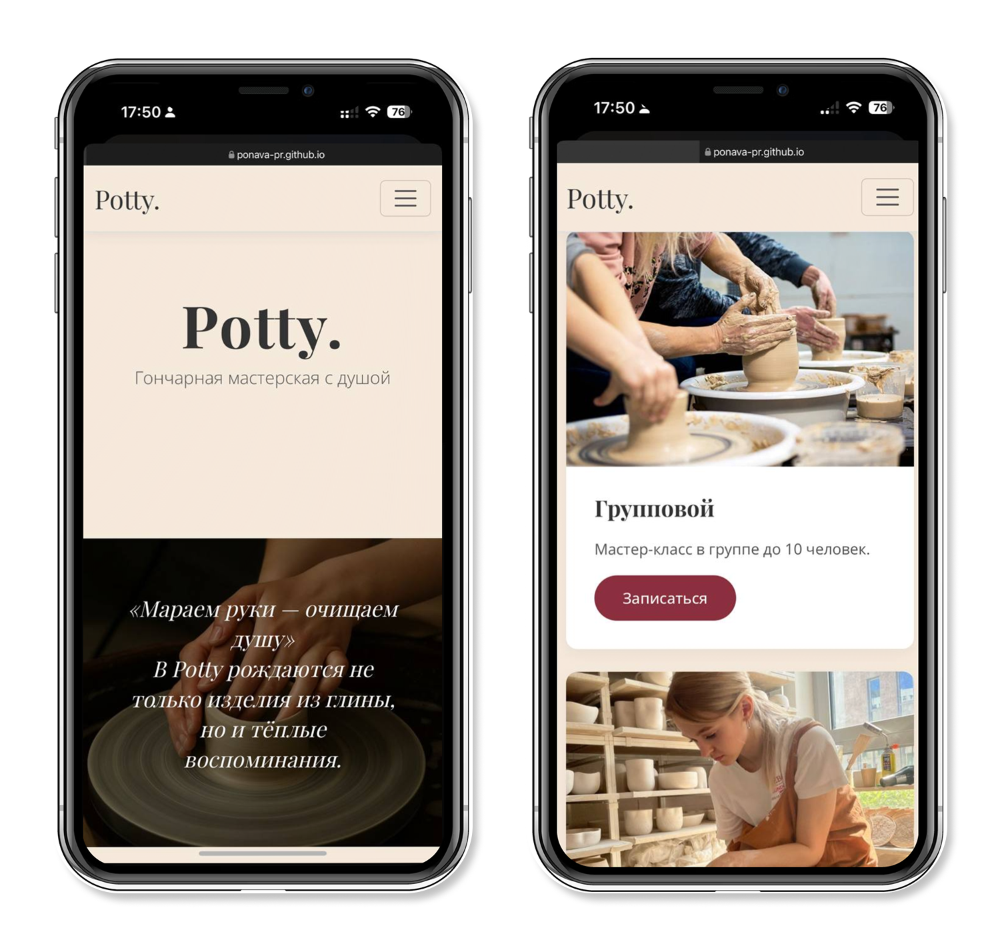
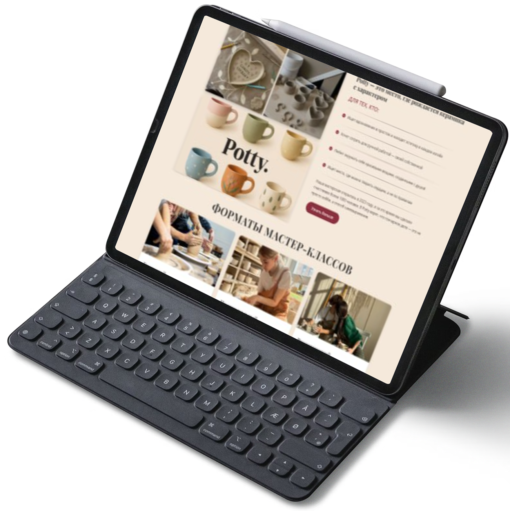
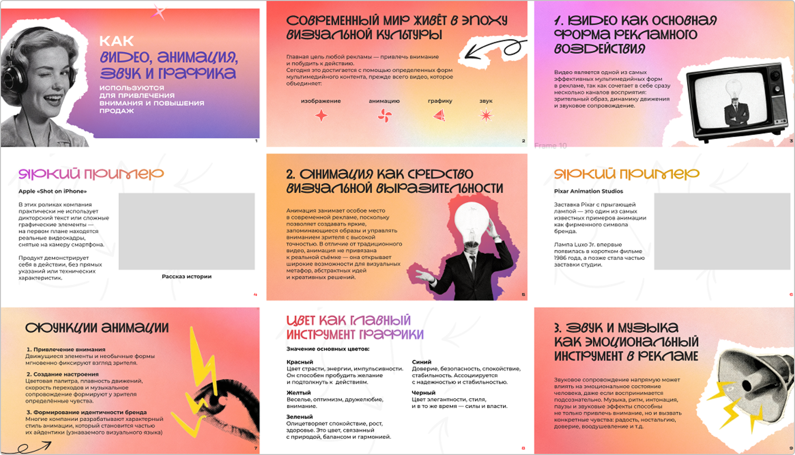

Графический дизайнер · Figma & Web
Работа с полиграфической продукцией и создание макетов для печати Дизайн постеров разных форматов, оформление журнальных страниц и разворотов. Проработка структуры макета: размещение текстовых блоков, изображений и графики
Создание дизайна веб-страниц, включая главные и внутренние разделы. Разработка макетов с продуманной структурой блоков и визуальных акцентов.
 Создание презентаций для различных целей Разработка структуры слайдов, логики подачи информации и визуального ритма. Дизайн слайдов с учётом читаемости и баланса между текстом и графикой.
